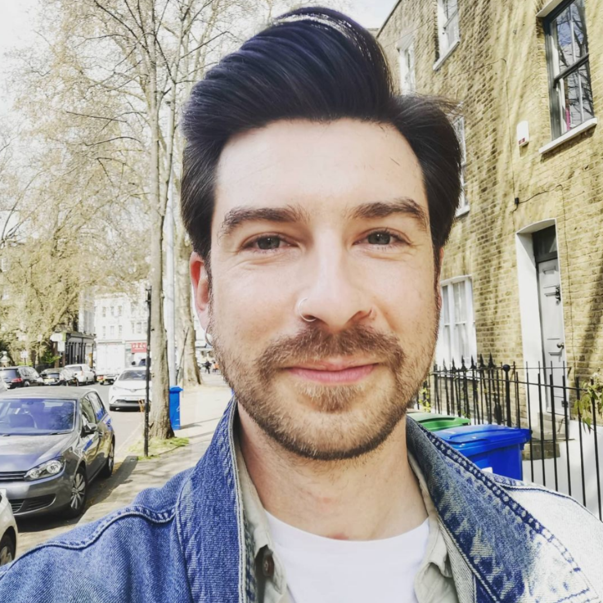

Richard Stott is an actor, comedian, voiceover artist and writer. Having gained a degree in theatre from The Arden (Awarded by Manchester University) he went on to a postgraduate in acting at Drama Studio London where he has since given workshops in show creation.Richard has worked for the Globe Theatre and as a voice over artist on various projects for Pukka Films. He has appeared on The Nihal Arthanyake Show (BBC Radio 5 Live), BBC No Filter, London Live and Union JACK Radio’s Minds Over Matter podcast. He first performed at the Edinburgh Festival Fringe in 2017 and his debut full-length solo show, Right Hand Man was a great success and saw him rated second in Dave’s Top Ten Funniest Jokes of the Fringe 2019. He has entertained audiences in some of the UK’s best loved venues and Festivals including the Great Yorkshire Fringe, Roar Festival, Bedfringe, Camden Fringe, Shaftesbury Fringe, Guildford Fringe, Battersea Arts Centre, and Hope Mill Theatre.
Richard was diagnosed with Poland Syndrome as a child and is often interviewed about his experiences of body dysmorphic disorder and mental health conditions.
Becca Butcher is a talented content creator, blogger and mental health & body positivity advocate with a large following on Instagram.
The female experience of Poland Syndrome, has for a very long time been under represented. When Becca was a teenager, there were no other ladies with Poland Syndrome openly talking about their experiences with the condition. Becca shared her journey with Poland Syndrome on Instagram and blogs which created a community of women with the same condition that Becca is supporting and advocating for.
Ambassadors help us raise our profile and make an impact. Their support is vital to our campaigning and fundraising work. Ambassadors help to raise awareness of our work by attending events to talk about Poland Syndrome, the work of the charity and encourage others to get involved. This is a really important role as it helps us reach more people with Poland Syndrome to raise awareness, inspire new fundraising activity, and thank our supporters for the work they are doing.
Lewis Hatchett is a former professional cricketer, now focusing on his business, Sport Yogi where he teaches athletes movement, mindset and meditation to build resilient minds and bodies in sport. PIP-UK is proud to announce that we will be working with Lewis as an ambassador. Lewis has positively contributed to PIP-UK over the years, so it is a real honour that he will now be working with us.
Lewis’ journey with Poland Syndrome is incredibly inspiring. He overcame many obstacles to make it as a professional cricketer and his current work on mindset, yoga and athleticism is of real benefit to athletes and the Poland Syndrome Community. Lewis is regularly contacted by families and people with Poland Syndrome and always takes the time to help and support them.
Kim Daybell is a Junior Doctor and 2 time Paralympian who swapped his table tennis bat for working on the frontline of the NHS during the coronavirus crisis. Kim represented GB at London 2012 and Rio 2016 and also won a silver medal for England at the 2018 Commonwealth Games. Kim is currently combining his NHS work with training for Tokyo 2021 qualifications.
Kim Daybell started playing table tennis at the age of nine at home in the garage with his dad and was immediately attracted by the speed and excitement of the sport. He made his international debut at the 2008 German Open at the age of 16 and progressed to win gold medals in Germany, Italy, Slovakia and Romania before finishing fourth at the European Championships in 2011 and representing ParalympicsGB at London 2012. Sheffield born Kim has been inspired by Paralympic sport and since 2010 has combined his table tennis training with studying for a degree in Medicine and subsequently serving as a junior doctor at Whittington Hospital London. At Rio 2016 Kim reached the quarter finals in both the men’s singles and men’s team events and at the European Championships a year later he and Facey Thompson claimed silver. He combined with Ashley Facey Thompson and Joshua Stacey to take bronze in the men’s class 10 team event in Sweden in 2019. Kim was born with Poland’s Syndrome.
Giselle Barbosa is a Sportsperson, business owner and author based in South Africa and got in touch with PIP-UK last year to connect with the community and to get involved and help inspire people with Poland Syndrome.